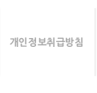

<!--%import("css/default.css")-->


<div class="divWrap">
	
	<div class="policy_title"></div>
	
	<div class="divTop">
		<div class="divMenuWrap">
			<a href="{getUrl('mid','clause')}"></a><a href="{getUrl('mid','privacy')}"></a>
		</div>
	</div>
	
	<div class="divMiddle">
		<div class="subTitle_policy"></div>
		<div class="policy">
		<textarea readonly="readonly">
제 1장 총칙

제 1조 (목적)
본 약관은 amiks(이하 ‘당사’라 한다)이 운영하는 인터넷 사이트 (www.yamnyam.com) 에서 제공하는 인터넷 관련 서비스(이하"서비스"라 한다)의 이용조건 및 절차에 관한 사항을 규정함을 목적으로 합니다.

제 2조 (용어의 정의)
1. 얌냠(yamNyam) 사이트 : 당사가 운영하는 인터넷 사이트(www.yamnyam.com)를 말합니다.
2. 회원 : 사이트(www.yamnyam.com)에 접속하여 본 약관에 동의하고 서비스를 이용하는 법적으로 유언의 효력이 있는 이용자를 말합니다.
3. 이용자 : 회원 및 회원이 아니면서 서비스를 이용하는 자
4. 이용계약 : 사이트(www.yamnyam.com)에 접속하여 이 약관을 포함한 서비스 이용과 관련하여 당사와 회원 간에 체결하는 모든 계약을 말합니다.
5. 아이디: 회원의 식별 및 서비스 이용을 위하여 회원의 신청에 따라 당사가 승인하는 고유한 문자와 숫자의 조합을 말합니다. 1개의 주민등록번호에 1개의 아이디만 발급, 이용이 가능합니다.
6. 비밀번호: 회원의 본인 여부를 검증하기 위하여 회원이 설정하여 회사에 등록한 고유의 문자와 숫자의 조합을 말합니다.
7. 운영자 : 서비스의 전반적인 관리와 원활한 운영을 위하여 당사가 선정한 자
8. 해지 : 당사 또는 회원이 이용계약을 해약하는 것을 말합니다.
9. 얌 : 당사가 별도로 명칭을 부여한 것으로서 회원의 활동에 따른 부가적인 포인트로써 서비스 내에서 사용하는 가상의 화폐
10. 가맹점: 당사와 가맹계약을 하고 얌냠(yamNyam) 사이트에서 상품을 공급하는 사업자를 말합니다.

제 3조 (약관의 효력 및 변경)
1. 이 약관은 얌냠(yamNyam) 사이트를 통해 온라인으로 공시하고 회원의 동의와 당사의 승낙으로 효력을 발생하며, 합리적인 사유가 발생할 경우 당사는 관련 법령에 위배되지 않는 범위 안에서 개정할 수 있습니다. 개정된 약관은 정당한 절차에 따라 얌냠(yamNyam) 사이트를 통해 공지함으로써 효력을 발휘합니다.
2. 회원은 정기적으로 얌냠(yamNyam) 사이트를 방문하여 약관의 변경사항을 확인하여야 합니다. 변경된 약관에 대한 정보를 알지 못해 발생하는 회원의 피해는 당사에서 책임지지 않습니다.
3. 회원은 변경된 약관에 동의하지 않을 경우 회원 탈퇴(해지)를 요청할 수 있습니다.
4. 당사는 필요하다고 인정되는 경우 이 약관을 변경할 수 있으며, 약관이 변경된 경우에는 지체 없이 제1항과 같은 방법으로 공시합니다.다만, 이용자의 권리 또는 의무에 관한 중요한 규정의 변경은 최소한 7일전에 공시합니다.
5. 회원은 변경된 약관 사항에 동의하지 않으면 서비스 이용을 중단하고 이용 계약을 해지할 수 있습니다.

제 4조 (약관 외 준칙)
1. 회사는 필요에 따라 서비스 별로 개별 약관을 설치 운영할 수 있으며 개별 약관과 본 약관의 내용이 일치하지 아니하는 경우, 개별 약관이 우선하여 적용됩니다.
2. 본 약관에 명시되지 않은 사항은 약관의 규제 등에 관한 법률, 정보통신망 이용촉진 및 정보보호 등에 관한 법률, 정보통신윤리위원회 심의규정, 정보통신 윤리강령 및 기타 관계법령의 규정에 의합니다.

제 5조 (서비스의 변경)
1. 얌냠(yamNyam) 사이트는 불가피한 여건이나 사정이 있는 경우 서비스의 내용을 변경하거나 중단할 수 있습니다.
2. 얌냠(yamNyam) 사이트는 1항의 사유로 서비스 내용이 변경 또는 중단되는 경우, 이로 인하여 이용자 또는 제3자가 입은 손해에 대하여는 배상하지 아니합니다.
 
제 2장 이용 계약 및 정보 보호

제 6조 (이용 계약의 성립)
1. 이용계약은 이용자의 이용계약 내용에 대한 동의와 이용신청에 대하여 당사의 이용승낙으로 성립합니다.
2. 이용계약에 대한 동의는 이용신청 당시 신청서 상의 '동의합니다' 버튼을 누름으로써 의사표시를 합니다.

제 7조 (이용 신청 및 승낙 - 회원가입)
1. 회원으로 가입하여 서비스를 이용하고자 하는 이용자는 당사에서 요청하는 제반 정보(아이디, 비밀번호, 이름, 연락처 등)를 제공하여야 합니다.
2. 모든 회원은 반드시 회원 본인의 정보를 제공하여야만 서비스를 이용할 수 있으며, 타인의 정보를 도용하거나 허위의 정보를 등록하는 등 본인의 진정한 정보를 등록하지 않은 회원은 서비스 이용과 관련하여 아무런 권리를 주장할 수 없으며, 관계 법령에 따라 처벌 받을 수 있습니다.
3. 회원가입은 반드시 본인의 진정한 정보를 통하여만 가입할 수 있으며 당사는 회원이 등록한 정보에 대하여 확인조치를 할 수 있습니다.회원은 당사의 확인조치에 대하여 적극 협력하여야 하며, 만일 이를 준수하지 아니할 경우 당사는 회원이 등록한 정보가 부정한 것으로 처리할 수 있습니다.
4. 당사는 회원에 대하여 등급별로 구분하여 다양한 서비스 등을 세분하여 이용에 차등을 둘 수 있습니다.
5. 당사는 아래사항에 해당하는 경우에 대해서 승낙을 보류할 수 있습니다.
- 기술상 서비스 제공이 불가능한 경우
- 실명이 아니거나, 다른 사람의 명의사용 등 이용자 등록 시 허위로 신청하는 경우
- 사회의 안녕질서 또는 미풍양속을 저해하거나, 저해할 목적으로 신청한 경우
- 법령 또는 약관을 위반하여 이용계약이 해지된 적이 있는 이용자가 신청하는 경우. 다만, 동 자격 상실 이후 6개월 이상 경과한 자로 회사의 회원 재가입 승낙을 받은 경우는 예외로 합니다.
- 부정한 용도로 본 서비스를 이용하고자 하는 경우
- 영리를 추구할 목적으로 본 서비스를 이용하고자 하는 경우
- 서비스와 경쟁관계에 있는 이용자가 신청하는 경우
- 기타 규정한 제반 사항을 위반하며 신청하는 경우
6. 당사는 서비스 이용신청이 다음 각 호에 해당하는 경우에는 그 신청에 대하여 승낙 제한사유가 해소될 때까지 승낙을 유보할 수 있습니다.
- 당사가 설비의 여유가 없는 경우
- 당사의 기술상 지장이 있는 경우
- 기타 당사의 귀책사유로 이용승낙이 곤란한 경우
7. 당사는 이용신청고객이 관계 법령에서 규정하는 미성년자일 경우에 서비스 별 안내에서 정하는 바에 따라 승낙을 보류할 수 있습니다.
8. 당사는 회원 가입 절차 완료 이후 제5항 각 호에 따른 사유가 발견된 경우 이용 승낙을 철회할 수 있습니다.

제 8조 (개인정보 보호)
당사는 관계법령이 정하는 바에 따라서 회원 등록정보를 포함한 회원의 개인정보를 보호하기 위하여 노력합니다. 회원의 개인정보보호에 관해서는 관계법령 및 당사가 정하는 개인정보보호정책에 정한 바에 의합니다. 단, 당사의 공식 사이트 이외의 링크된 사이트에서는 당사의 개인정보 보호정책이 적용되지 않습니다. 또한 당사는 회원의 귀책사유로 인해 노출된 정보에 대해 책임을 지지 않습니다.

제 9조 (개인정보 이용)
1. 당사는 다음과 같은 경우에 법이 허용하는 범위 내에서 회원의 개인정보를 제3자에게 제공할 수 있습니다.
- 관계 법령에 의하여 수사상의 목적으로 관계기관으로부터 요구가 있는 경우
- 정보통신윤리위원회의 요청이 있는 경우
- 기타 관계법령에서 정한 절차에 따른 요청이 있는 경우
- 정보통신서비스의 제공에 따른 요금 정산을 위하여 필요한 경우
- 통계작성, 학술연구 또는 시장조사를 위하여 필요한 경우로서 특정 개인을 알아 볼 수 없는 형태로 가공하여 제공하는 경우
2. 회원이 당사 및 당사와 제휴한 서비스들을 편리하게 이용할 수 있도록 하기 위해 회원 정보는 당사와 제휴한 업체에 제공될 수 있습니다.
단, 당사는 회원 정보 제공 이전에 제휴 업체, 제공 목적, 제공할 회원 정보의 내용 등을 사전에 공지하고 회원의 동의를 얻어야 합니다.
3. 당사는 위 3항의 범위 내에서 당사의 업무와 관련하여 회원 전체 또는 일부의 개인정보에 관한 집합적인 통계 자료를 작성하여 이를 사용할 수 있고, 서비스를 통하여 회원의 컴퓨터에 쿠키를 전송할 수 있습니다.
4. 얌냠(yamNyam) 사이트 내에서 벌어지는 각종 이벤트 행사에 참여한 회원의 개인정보가 해당 이벤트의 주최자에게 제공될 수 있습니다.
5. 회원이 이용신청서에 회원정보를 기재하고, 본 약관에 따라 이용신청을 하는 것은 당사가 본 약관에 따라 이용신청서에 기재된 회원정보를 수집, 이용 및 제공하는 것에 동의하는 것으로 간주됩니다.

제 10조 (회원 아이디 등 계약 사항의 변경 및 관리)
1. 당사는 회원에 대하여 약관에 정해진 바에 따라 이용자 아이디를 부여합니다.
2. 이용자 아이디는 원칙적으로 변경이 불가하며 부득이한 사유로 인하여 변경 하고자 하는 경우에는 해당 아이디를 해지하고 재가입해야 합니다.
3. 얌냠(yamNyam) 사이트 이용자 아이디는 회원 본인의 동의 하에 당사 또는 자회사가 운영하는 사이트의 회원 아이디와 연결될 수 있습니다.
4. 이용자 아이디는 다음 각 호에 해당하는 경우에 회원의 요청 또는 당사의 직권으로 변경 또는 이용을 정지할 수 있습니다.
- 이용자 아이디가 전화번호 또는 주민등록번호 등으로 등록되어 사생활 침해가 우려되는 경우
- 타인에게 혐오감을 주거나 미풍양속에 어긋나는 경우
- 당사, 당사의 서비스 또는 서비스 운영자 등의 명칭과 동일하거나 오인 등의 우려가 있는 경우
- 기타 합리적인 사유가 있는 경우
5. 이용자 아이디 및 비밀번호의 관리책임은 회원에게 있습니다. 이를 소홀히 관리하여 발생하는 서비스 이용상의 손해 또는 제3자에 의한 부정이용 등에 대한 책임은 회원에게 있으며 당사는 그에 대한 책임을 지지 않습니다.
6. 회원의 개인정보는 “회원정보 수정”을 통해 언제든지 열람하고 수정할 수 있습니다.
회원은 이용신청 시 기재한 사항이 변경되었을 경우 즉시 수정해야 하며 회원정보를 변경하지 아니하여 발생되는 문제의 책임은 회원에게 있습니다.

제 3장 계약 당사자의 의무 및 권리

제 11조 (당사의 의무 – 회원에 대한 통지 포함)
1. 당사는 서비스 제공설비를 항상 운용 가능하도록 유지 보수해야 하며, 안정적인 서비스 제공을 위해 최선의 노력을 다하여야 합니다.
2. 당사는 개인정보 보호를 위해 보안시스템을 구축, 유지하며, 개인정보 보호정책을 공시하고 준수합니다.
3. 당사는 당사에서 제공한 서비스로 인하여 명예훼손, 저작권침해 등 법률상의 이익을 침해 받은 이용자가 해당 정보의 제한 등의 적절한 조치를 원할 경우 지체 없이 이행해야 합니다. 다만, 비회원 이용자의 요청인 경우에는 본인확인 절차를 거칠 수 있습니다.
4. 당사는 회원으로부터 제기되는 의견이나 불편사항이 객관적으로 정당하다고 인정될 경우, 적절한 절차를 거쳐 지체 없이 이행해야 합니다. 단, 바로 처리가 불가능한 경우는 회원에게 적절한 사유와 일정을 통보하여야 합니다.
5. 회원에 대한 통지를 하는 경우에는 회원 가입신청서에 기재된 E-mail이나 기타의 방법으로 할 수 있습니다.
6. 불특정 다수의 회원에 대한 통지는 공지사항에 공지함으로써 이를 갈음할 수 있으며, 이로 인한 불이익에 대해 당사는 책임을 지지 않습니다.

제 12조 (회원의 의무)
1. 회원은 서비스를 이용할 때 다음 각 호의 행위를 하여서는 안됩니다.
- 이용 신청 또는 변경 시 허위 사실을 기재하거나, 다른 회원의 아이디 및 비밀번호를 도용, 부정하게 사용하는 행위
- 회사의 서비스 정보를 이용하여 얻은 정보를 회사의 사전 승낙 없이 복제 또는 유통시키거나 상업적으로 이용하는 행위
- 타인의 명예를 손상시키거나 불이익을 주는 행위
- 게시판 등에 음란물을 게재하거나 음란사이트를 연결(링크)하는 행위
- 당사의 저작권, 제3자의 저작권 등 기타 권리를 침해하는 행위(제3자의 저작권 등 법적인 문제 발생시에 당사는 책임이 없으며 게시물을 올린 게시자에게 책임이 있습니다.)
- 공공질서 및 미풍양속에 위반되는 내용의 정보, 문장, 도형, 음성 등을 타인에게 유포하는 행위
- 서비스와 관련된 설비의 오동작이나 정보 등의 파괴 및 혼란을 유발시키는 컴퓨터 바이러스 감염자료를 등록 또는 유포하는 행위
- 서비스 운영을 고의로 방해하거나 서비스의 안정적 운영을 방해할 수 있는 정보 및 수신자의 명시적인 수신거부의사에 반하여 광고성 정보를 전송하는 행위
- 타인으로 가장하는 행위 및 타인과의 관계를 허위로 명시하는 행위
- 다른 회원의 개인정보를 수집, 저장, 공개하는 행위
- 자기 또는 타인에게 재산상의 이익을 주거나 타인에게 손해를 가할 목적으로 허위의 정보를 유통시키는 행위
- 재물을 걸고 도박하거나 사행행위를 하는 행위
- 윤락행위를 알선하거나 음행을 매개하는 내용의 정보를 유통시키는 행위
- 수치심이나 혐오감 또는 공포심을 일으키는 말이나 음향, 글이나 화상 또는 영상을 계속하여 상대방에게 도달하게 하여 상대방의 일상적 생활을 방해하는 행위
- 서비스에 게시된 정보를 변경하는 행위
- 관련 법령에 의하여 그 전송 또는 게시가 금지되는 정보(컴퓨터 프로그램 포함)의 전송 또는 게시 행위
- 당사의 직원이나 운영자를 가장하거나 사칭하여 또는 타인의 명의를 도용하여 글을 게시하거나 메일을 발송하는 행위
- 컴퓨터 소프트웨어, 하드웨어, 전기통신 장비의 정상적인 가동을 방해, 파괴할 목적으로 고안된 소프트웨어 바이러스, 기타 다른 컴퓨터 코드, 파일, 프로그램을 포함하고 있는 자료를 게시하거나 e-mail으로 발송하는 행위
- 스토킹(stalking) 등 다른 회원을 괴롭히는 행위
- 기타 불법적이거나 부당한 행위
2. 회원은 관계 법령, 본 약관의 규정, 이용안내 및 서비스 상에 공지한 주의사항, 당사가 통지하는 사항 등을 준수하여야 하며, 기타 당사의 업무에 방해되는 행위를 하여서는 아니 됩니다.
3. 회원은 당사에서 공식적으로 인정한 경우를 제외하고는 서비스를 이용하여 상품을 판매하는 영업 활동을 할 수 없으며, 특히 해킹, 광고를 통한 수익, 음란사이트를 통한 상업행위, 상용소프트웨어 불법배포 등을 할 수 없습니다. 이를 위반하여 발생한 영업 활동의 결과 및 손실, 관계기관에 의한 구속 등 법적 조치 등에 관해서는 회사가 책임을 지지 않으며, 회원은 이와 같은 행위와 관련하여 당사에 대하여 손해배상 의무를 집니다.
4. 회원은 서비스 이용을 위해 등록할 경우 현재의 사실과 일치하는 완전한 정보(이하 "등록정보")를 제공하여야 합니다.
5. 회원은 등록정보에 변경사항이 발생할 경우 즉시 갱신하여야 합니다. 회원이 제공한 등록정보 및 갱신한 등록정보가 부정확할 경우, 기타 회원이 본 조 제1항에 명시된 행위를 한 경우에 당사는 본 서비스 약관 제24조에 의해 회원의 서비스 이용을 제한 또는 중지 할 수 있습니다.

제 4장 서비스의 이용

제 13조 (저작권의 귀속 및 이용제한)
1. 당사가 작성한 사이트에 관한 저작권 및 기타 지적재산권은 당사에 귀속합니다.
2. 게시물에 대한 권리와 책임은 게시자에게 있으며, 당사는 게시물에 대한 사용권한을 갖습니다. 당사는 서비스 내 게재 이외의 다른 목적으로 사용할 경우 게시물에 대한 게시자를 반드시 명시해야 됩니다. 단, 비영리적인 경우에는 그러하지 아니하며 또한 회사는 서비스내의 게재권을 갖습니다.
3. 이용자는 얌냠(yamNyam) 사이트를 이용함으로써 얻은 정보나 서비스 내에 게재된 게시물을 당사의 사전 승낙 없이 복제, 송신, 출판, 배포, 방송 기타 방법에 의하여 영리목적으로 이용하거나 제3자에게 이용하게 하여서는 안됩니다
4. 당사는 이용자의 귀책사유로 인한 서비스 이용의 장애에 대하여 책임을 지지 않습니다.
제 14조 (서비스의 이용개시 및 이용시간)
1. 당사는 회원의 이용 신청을 승낙한 시점부터 서비스를 개시합니다. 단 일부 서비스에 대하여 당사에서 지정된 일자부터 서비스를 개시할 수 있으며 회사의 업무상 또는 기술상의 장애로 인하여 서비스를 개시하지 못하는 경우 서비스상에 공지하거나 회원에게 즉시 이를 통지합니다.
2. 서비스 이용은 당사의 업무상 또는 기술상 특별한 지장이 없는 한 연중무휴, 1일 24시간 운영을 원칙으로 합니다. 단, 당사는 시스템 정기점검, 증설 및 교체를 위해 당사가 정한 날이나 시간에 서비스를 일시 중단할 수 있으며, 예정되어 있는 작업으로 인한 서비스 일시 중단은 얌냠(yamNyam) 사이트를 통해 사전에 공지합니다.
3. 당사는 긴급한 시스템 점검, 증설 및 교체, 설비의 장애, 서비스 이용의 폭주, 국가비상사태, 정전 등 부득이한 사유가 발생한 경우 사전 예고 없이 일시적으로 서비스의 전부 또는 일부를 중단할 수 있습니다.
4. 당사는 서비스 개편 등 서비스 운영 상 필요한 경우 회원에게 사전 예고 후 서비스의 전부 또는 일부의 제공을 중단할 수 있습니다.

제 15조 (게시물의 등록 및 삭제 - 회원의 게시물 관리 포함)
회사는 다음 각 호에 해당하는 게시물 등에 대하여 회원의 사전 동의 없이 삭제, 등록 거부할 수 있으며 회원으로부터 회원 자격을 박탈할 수 있습니다.
1. 게시물이라 함은 회원이 서비스를 이용하면서 게시한 글, 사진, 각종 파일과 링크 등을 말합니다.
2. 회원이 서비스에 등록하는 게시물 등으로 인하여 본인 또는 타인에게 손해나 기타 문제가 발생하는 경우 회원은 이에 대한 책임을 지게 되며, 회사는 특별한 사정이 없는 한 이에 대하여 책임을 지지 않습니다.
3. 당사는 다음 각 호에 해당하는 게시물 등을 회원의 사전 동의 없이 임시게시 중단, 수정, 삭제, 이동, 등록 거부 또는 회원 자격 박탈 등의 관련 조치를 취할 수 있습니다.
- 다른 회원 또는 제 3자에게 심한 모욕을 주거나 명예를 손상시키는 내용인 경우
- 공공질서 및 미풍양속에 위반되는 내용을 유포하거나 링크시키는 경우
- 불법복제 또는 해킹을 조장하는 내용인 경우
- 불필요하거나 승인되지 않은 광고, 판촉물을 게재하는 경우
- 범죄와 결부된다고 객관적으로 인정되는 내용일 경우
- 다른 이용자 또는 제 3자의 저작권 등 기타 권리를 침해하는 내용인 경우
- 타인의 ID(고유번호), 성명 등을 무단으로 도용하여 작성한 내용이거나, 타인이 입력한 정보를 무단으로 위·변조한 내용인 경우
- 사적인 정치적 판단이나 종교적 견해의 내용으로 당사가 서비스 성격에 부합하지 않는다고 판단하는 경우
- 동일한 내용을 중복하여 다수 게시하는 등 게시의 목적에 어긋나는 경우
- 당사에서 규정한 게시물 원칙에 어긋나거나, 게시판 성격에 부합하지 않는 경우
- 기타 관계법령에 위배된다고 판단되는 경우
3. 당사는 게시물 등에 대하여 제3자로부터 명예훼손, 지적재산권 등의 권리 침해를 이유로 게시중단 요청을 받은 경우 이를 임시로 게시중단(전송중단)할 수 있으며, 게시중단 요청자와 게시물 등록자 간에 소송, 합의 기타 이에 준하는 관련기관의 결정 등이 이루어져 당사에 접수된 경우 이에 따릅니다.

제 16조 (정보의 제공)
1. 당사는 회원에게 서비스 이용에 필요하다고 인정되는 각종 정보에 대해서 전자우편이나 서신, 우편, SMS, 전화 등의 방법으로 회원에게 제공할 수 있습니다.
2. 당사는 서비스 개선 및 회원 대상의 서비스 소개 등의 목적으로 회원의 동의하에 관련 법령에 따라 추가적인 개인 정보를 수집할 수 있습니다.
3. 당사가 회원에게 서비스를 제공할 수 있는 서비스 투자기반의 일부는 광고게재를 통한 수익으로부터 나옵니다. 회원은 서비스 이용 시 노출되는 광고게재에 대해 동의합니다.
4. 당사는 서비스 상에 게재되어 있거나 서비스를 통한 광고주의 판촉활동에 회원이 참여하거나 교신 또는 거래를 함으로써 발생하는 손실과 손해에 대해 책임을 지지 않습니다.
5. 회원이 서비스상에 게재되어 있는 광고를 이용하거나 서비스를 통한 광고주의 판촉활동에 참여하는 등의 방법으로 교신 또는 거래를 하는 것은 전적으로 회원과 광고주 간의 문제입니다. 만약 회원과 광고주 간에 문제가 발생할 경우에도 회원과 광고주가 직접 해결하여야 하며, 이와 관련하여 회사는 어떠한 책임도 지지 않습니다.
6. 회원이 등록가맹점을 이용(주문서비스 등)할 경우, 가맹점에게 회원정보(이름, 주소, 전화번호등)을 제공합니다.
7. 특정 항목의 정보에 대해서는 별도의 신청을 한 회원에 대하여 유료로 제공할 수 있습니다.

제 17조 (유료서비스의 이용 –배달관련)
1. 당사가 제공하는 서비스나 정보의 이용은 기본적으로 무료입니다. 단, 당사가 제공하는 별도의 유료 서비스에 대해서는 해당 정보에 명시된 요금을 지불하여야 사용이 가능합니다.
2. 회원은 이용요금을 통해 유료 서비스를 이용할 수 있으며 당사가 정하는 결제수단에 의해 이용요금을 지불할 수 있습니다.
3. 당사는 당사가 필요할 경우 회원에게 별도의 통보 없이 결제수단을 제외 혹은 추가할 수 있으며, 결제수단 제외 이전에 해당 결제수단을 이용해 결제한 회원에 대해서는 해당 결제수단으로 결제가 이루어집니다.
4. 기타 유료 서비스 이용 회원의 경우 당해 서비스와 관련하여서는 회사가 별도로 정한 약관 및 정책에 따릅니다.
5. 당사는 회원의 주문내용 정보와 결제방법에 대한 정보를 가맹점에 전달하고, 가맹점이 배달을 완료합니다.
6. 당사는 이용자와 가맹점과의 상품거래(음식배달) 등과 관련하여 어떠한 책임도 부담하지 아니하며, 발생한 분쟁에 관여할 의무가 없고,이로 인한 어떠한 손해도 배상할 책임이 없습니다.
7. 당사는 이용자가 구매한 상품의 배달지연으로 입은 손해를 배상할 의무가 없으며 배달지연에 대한 책임은 가맹점에서 집니다.
제 5장 계약 해지 및 이용제한

제 18조 (계약 변경 및 해지)
1. 지식경제부, 한국인터넷진흥원, 방송통신심의위원회 등 관계기관의 요청이 있는 경우 당사는 사전통지 없이 이용계약 해지 또는 회원으로서의 자격박탈, 서비스 제공 중지 등의 조치를 취할 수 있으며, 해당 정보를 사전통지 없이 삭제할 수 있습니다.
2. 회원이 이용계약을 해지하고자 할 경우, 회원 본인이 서비스내의 회원탈퇴메뉴를 통하여 해지신청을 해야 합니다.

제 19조 (서비스 이용제한)
1. 당사는 회원이 서비스 이용내용에 있어서 본 약관 제 12조 내용을 위반하거나, 다음 각 호에 해당하는 경우 서비스 이용 제한, 초기화, 이용계약 해지 및 기타 해당 조치를 할 수 있습니다.
- 회원정보에 부정한 내용을 등록하거나 타인의 이용자 아이디, 비밀번호 기타 개인정보를 도용하는 행위 또는 이용자 아이디를 타인과 거래하거나 제공하는 행위
- 공공질서 및 미풍양속에 위반되는 저속, 음란한 내용 또는 타인의 명예나 프라이버시를 침해할 수 있는 내용의 정보, 문장, 도형, 음향, 동영상을 전송, 게시, 전자우편 또는 기타의 방법으로 타인에게 유포하는 행위
- 다른 이용자를 희롱 또는 위협하거나, 특정 이용자에게 지속적으로 고통 또는 불편을 주는 행위
- 당사로부터 특별한 권리를 부여 받지 않고 회사의 클라이언트 프로그램을 변경하거나, 당사의 서버를 해킹하거나, 웹사이트 또는 게시된 정보의 일부분 또는 전체를 임의로 변경하는 행위
- 서비스를 통해 얻은 정보를 당사의 사전 승낙 없이 서비스 이용 외의 목적으로 복제하거나, 이를 출판 및 방송 등에 사용하거나, 제 3자에게 제공하는 행위
- 당사의 운영진, 직원 또는 관계자를 사칭하거나 고의로 서비스를 방해하는 등 정상적인 서비스 운영에 방해가 될 경우
- 정보통신 윤리위원회 등 관련 공공기관의 시정 요구가 있는 경우
-약관을 포함하여 당사가 정한 제반 규정을 위반하거나 범죄와 결부된다고 객관적으로 판단되는 등 제반 법령을 위반하는 행위

제 6장 손해배상 및 기타사항
제 20조 (손해배상)
1. 회원이 본 약관의 규정을 위반함으로 인하여 당사 또는 제3자에게 손해가 발생하게 되는 경우, 이 약관을 위반한 회원은 당사에 발생하는 모든 손해를 배상하여야 합니다.
2. 당사는 서비스 요금이 무료인 서비스 이용과 관련하여 당사의 고의, 과실에 의한 것이 아닌 한 회원에게 발생한 어떠한 손해에 관하여도 책임을 지지 않습니다.
3. 유료 서비스의 경우는 별도로 정하는 바에 따릅니다.

제 21조 (면책조항)
1. 당사는 전시, 사변 등 국가비상사태, 천재지변, 기간통신사업자의 서비스제공 중단, 한전으로부터의 전력공급 중단, 해커의 침입, 컴퓨터바이러스 등 이와 유사한 사정으로 인한 회사시스템의 작동불능 및 기타 당사의 귀책사유 없이 또는 이 약관에 명시된 사유로 인하여 서비스를 제공할 수 없는 경우 당사는 그로 인한 책임을 면합니다.
2. 당사는 회원이 서비스에 게시한 정보, 자료, 사실의 정확성, 신뢰성 등 그 내용에 관하여는 책임을 부담하지 않습니다.
3. 회원은 자기의 책임 아래 서비스를 이용하며, 서비스에 제공된 자료에 대한 선택 또는 이용으로 손해가 발생하거나 어떠한 불이익이 발생하더라도 당사는 책임을 부담하지 않습니다.
4. 당사는 회원 상호간 또는 회원과 제3자 상호간의 서비스를 매개로 하여 물품거래 등과 관련하여 어떠한 책임도 부담하지 아니하며, 그들 사이에 발생한 분쟁에 관여할 의무가 없으며, 이로 인한 어떠한 손해도 배상할 책임이 없습니다.
5. 당사는 당사의 연결사이트에 대해 보증책임을 지지 않으며 따라서 연결사이트와 이용자간에 이루어진 어떠한 거래에 대해서도 회사는 그 책임을 지지 않습니다.
6. 당사는 서비스에 표출된 어떠한 의견이나 정보에 대해 확신이나 대표할 의무가 없으며 회원이나 제3자에 의해 표출된 의견을 승인하거나 반대하거나 수정하지 않습니다. 당사는 어떠한 경우라도 회원이 서비스에 담긴 정보에 의존해 잃은 이득이나 입은 해에 대해 책임이 없습니다.
7. 당사는 회원이 서비스의 이용과 관련하여 기대하는 이익에 관하여 책임을 부담하지 않습니다.

제 22조 (재판권 및 준거법)
이 약관에 명시되지 않은 사항은 전기통신사업법 등 대한민국의 관계법령과 상관습에 따릅니다.

제 23조 (관할법원)
1. 당사와 회원은 서비스와 관련하여 발생한 분쟁을 원만하게 해결하기 위하여 필요한 모든 노력을 하여야 합니다.
2. 회원이 회사에 대해서 소송을 제기할 경우는 회사에 책임사유가 명백히 인정되는 경우로 한정되며, 상충하는 법령 또는 법규와 관계없이 본 서비스의 이용 또는 약관으로 인하여 발생하는 모든 청구 및 소송은 그 원인이 발생한 날로부터 1년 이내에 제기되어야 합니다.
3. 본 약관과 관련하여 발생한 분쟁에 대해 소송이 제기될 경우 당사의 본사 소재지를 관할하는 법원을 관할법원으로 합니다.

제 24조 (분쟁해결)
당사는 이용자로부터 제출되는 불만사항 및 의견이 정당하다고 판단하는 경우 우선적으로 그 사항을 처리합니다. 단, 신속한 처리가 어렵다고 판단되는 경우에는 이용자에게 그 사유와 처리일정을 즉시 통보해 드립니다.

-시행일자 : 2011년 4월 11일


												상품권 이용약관
 
제 1 조 (목적) 
이 약관은 얌냠 (이하 "발행자"라 함)이 발행한 상품권을 그 소지자(이하 "고객"이라 함)가 사용함에 있어 고객과 발행자 및 발행자와 가맹계약을 맺은자(이하 “가맹점”이라 함) 간에 준수할 사항을 규정한다 
제 2 조 (적용의 범위) 
이 약관의 적용을 받는 상품권은 상품권의 권면에 기재된 금액에 상응하는 물품 또는 용역 (이하 “물품 등” 이라 함)을 제공받을 수 있는 금액상품권으로서 종이 등 실물로 된 상품권을 말한다.
제 3 조 (상품권의 사용)
1. 고객이 상품권면 금액 또는 수량의 범위 내에서 물품 등의 제공을 요구하는 경우 발행자 또는 가맹점은 즉시 해당 물품 등을 제공한다.
2. 고객은 상품 권면에 기재된 특정매장(할인매장 제외) 또는 물품에 대하여 상품권을 사용할 수 있다.
  
제 4 조 (상품권의 훼손 및 도난, 분실)
1. 상품권이 심하게 훼손되어 권면금액 및 발행번호 등을 확인할 수 없거나 발행자의 상품권임을 파악할 수 없는 경우, 상품권이 위조ㆍ변조 또는 기타 부정한 방법으로 발행된 경우, 상품권을 위법, 불법 또는 기타 부정한 방법으로 취득한 경우에는 발행자 및 가맹점은 상품권의 재발급 및 사용을 거부할 수 있다.
2. 상품권의 도난, 분실에 대하여 발행자는 책임을 지지 아니하며, 도난ㆍ분실한 상품권은재발행하지 않는다. 
  
제 5 조 (사용기간) 
상품권은 상법 제 64조의 상사채권 소멸시효(발행일로부터 5년)에 의거 발행일로부터 5년동안 유효하다.(단, 이벤트 상품으로 발행된 상품권은 발행일로부터 한달동안 유효하다.)
제 6 조 (상품권의 환불 및 잔액반환)
기 발행된 상품권은 환불이 불가능하며, 상품권면 금액의100분의 60(1만원이하 상품권은 100분의 80) 이상에 해당하는 물품 등을 제공받고 고객이 잔액의 반환을 요구하는 경우 발행자는 잔액을 현금으로 반환한다.(단, 이벤트 상품으로 발행된 상품권은 잔액을 반환하지 않는다.)
제 7 조 (지급보증)
상품권의 지급보증은 상품권면에 기재된 바에 따른다.
제 8 조 (발행자의 책임) 
상품권 이용과 관련된 고객의 권리에 대한 최종적인 책임은 발행자가 진다.
제 9 조 (기타) 
이 약관에 명시되지 아니한 사항 또는 약관 해석상 다툼이 있는 경우에는 고객과 발행자 또는 가맹점의 합의에 의하여 결정하되 , 합의가 이루어지지 아니한 경우에는 관계법령 및 일반관례에 따른다.
부칙 제 1조 (시행시기) 
본 약관은 2011년 4월 1일부터 시행한다.

		</textarea>
		</div>
	</div>
	<div class="divBottom">
	</div>

</div>